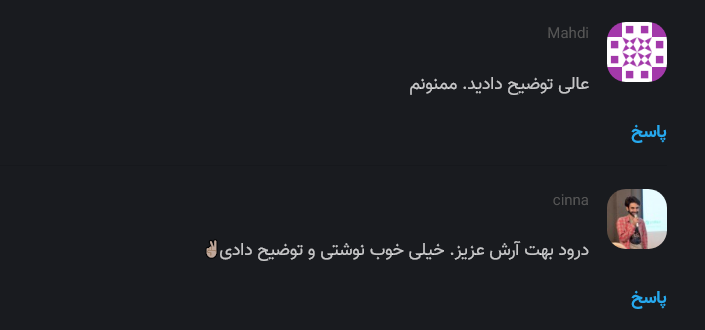

تنظیمات سرور
فایل تنظیمات سرور نیکاس با فرمت INI در نظر گرفته شده است. در این فایل به ازای هر بخش از سرور گزینه های مورد نظر خودمان را تعریف می کنیم. فایل نمونه را در این آدرس میتوانید مشاهده کنید. این فایل بدین صورت میباشد :
[general]
dbpath = example.db
host = https://arash-hatami.ir/
[server]
listen = http://localhost:1234/
[admin]
enabled = true
password = secret_token
جهت استفاده از این فایل آن را با گزینه c- به دستور اجرایی خود اضافه کنید یا از متغیر های ENV استفاده کنید :
nikas -c nikas.cfg
# or
env NIKAS_SETTINGS=path/to/nikas.cfg nikas
حال به بررسی تنظیمات مختلف سرور میپردازیم :
General
در این بخش تمامی تنظیمات عمومی نیکاس انجام می شود. مقدار پیشفرض آن به این شکل است :
# Default
[general]
dbpath = /tmp/nikas.db
name =
host =
max-age = 15m
notify = stdout
log-file =
dbpath
آدرس فایل پایگاه داده SQLite3. این آدرس باید در پوشه غیرموقت باشد تا پایگاه داده شما حذف نشود
name
برای استفاده در حالتی به کار می رود که شما چند وبسایت تعریف کرده باشید. در غیر اینصورت اجباری نیست.
host
در اینجا باید وبسایت(ها) را تعریف کنید. شما جهت اجرا به حداقل یک وبسایت نیاز دارید. هدف از این بخش مسائل امنیتی بوده و به دلیل استفاده از CORS جهت محدود کردن نمایش نظرات در وب سایت مقصد باید آدرس وبسایت های خودتان را تعریف کنید.
پیشنهاد می شود ابتدا وبسایت های HTTP را تعریف کنید ( non-SSL ).
[general]
host =
http://website.ir/
https://website.ir/
در صورتی که نیکاس نتواند هنگام اجرای اولیه به حداقل یکی از این وبسایت ها متصل شود ، پیغام خطایی در ترمینال داده میشود.
max-age
بازه زمانی مجاز که به کاربران اجازه ی ویرایش یا حذف نظرات داده می شود.
notify
سیستم اعلام دریافت نظر برای نظرات جدید :
- stdout : این مورد به صورت پیشفرض فعال بوده و نظرات جدید در قالب خروجی عادی در ترمینال نمایش داده می شوند
- smtp : اعلان از طریق ایمیل برای شما ارسال خواهد شد. توجه داشته باشید که در صورت استفاده از این گزینه باید تنظیمات SMTP را نیز انجام دهید.
reply-notifications
با استفاده از این گزینه به کاربران اجازه داده می شود تا تعیین کنند در صورت ثبت پاسخ برای نظرشان به آنها ایمیلی ارسال شود.
قبل از استفاده این مورد حتما تنظیمات مناسب را در قسمت Moderation انجام دهید تا از اسپم ها جلوگیری شود. همچنین باید تنظیمات SMTP نیز انجام شده باشد
log-file
با استفاده از این گزینه تمامی رخداد ها با جای اینکه در خروجی ترمینال نمایش داده شوند در یک فایل ذخیره خواهند شد.
gravatar
در صورتی که این گزینه را فعال کنید ، نیکاس از Gravatar برای نمایش تصویر کاربران استفاده خواهد کرد. البته به شرطی که کاربر مورد نظر هنگام ارسال نظر آدرس ایمیل خودش رو نیز ثبت کرده باشه. در غیر اینصورت یک آیکون رندوم به آن اختصاص داده می شود.

Moderation
در این قسمت Queue پردازش برای نظرات جدید را فعال می کنیم.
# Default
[moderation]
enabled = false
approve-if-email-previously-approved = false
purge-after = 30d
enabled
فعال کردن گزینه مدیریت. بدین صورت که نظرات پس از ثبت باید توسط مدیریت تایید شوند. نظرات تایید شده به صورت عمومی نمایش داده نخواهند شد.
approve-if-email-previously-approved
اگر این گزینه فعال باشد ؛ در صورتی که کاربر مورد نظر با ایمیل وارد شده حداقل در 6 ماه گذشته یک نظر تایید شده داشته باشد ، نظر فعلی وی نیز خودکار تایید خواهد شد.
این گزینه کاربردی است ولی اگر کاربری به طور اتفاقی آدرس ایمیل درستی را حدث بزند یا به جای فرد دیگری که آن را می شناسد نظری با آدرس ایمیل وی ثبت کند می تواند نظر اسپم در سایت نمایش دهد. پس با ریسک خودتان این گزینه را فعال نمایید
purge-after
با استفاده از این گزینه می توانید مشخص کنید نظرات تایید نشده پس از چند روز به طور خودکار حذف شوند
Server
تنظیمات اصلی HTTP Server نیکاس در این بخش صورت میپذیرد.
# Default
[server]
listen = http://localhost:8080
reload = off
profile = off
listen
آدرسی که باید سرور با آن کار کند. نیکاس از TCP/IP و UNIX domain socket پشتیبانی میکند
# UNIX domain socket
listen = unix:///tmp/nikas.sock
# TCP/IP
listen = http://localhost:1234/
در نیکاس از gevent استفاده شده است و به طور خودکار برای TCP/IP به کار میرود اما نمیتواند درخواست های HTTP را روی UNIX domain socket مدیریت کند.
public-endpoint
آدرس عمومی که سرور نیکاس با آن در دسترس خواهد بود. برای مثال nikas.domain.ir. باید به صورت آدرس کامل نوشته شود :
public-endpoint = https://nikas.domain.ir
در صورتی که این مقدار خالی گذاشته شود نیکاس سعی می کند به طور خودکار آدرس را تشخیص دهد. از این مقدار وقتی استفاده کنید که آدرس عمومی با آدرس تعیین شده در listen متفاوت باشد.
برای مثال وقتی از Docker استفاده می کنید آدرس های listen و public با یکدیگر متفاوت هستند
reload
با فعال کردن این گزینه در صورتی که سورس برنامه تغییر کند ، نیکاس ریستارت می شود. فقط برای حالت توسعه مناسب است و در محیط عملیاتی Production کاربردی ندارد
samesite
این گزینه مقدار Set-Cookie را در SameSite تعیین میکند. زمانی به کار می رود که نیکاس در دامنه یکسانی هاست نشده باشد. برای مثال از domain.ir فراخوانی شده و در comments.domain.ir هسات شده است.
به صورت پیشفرض نیکاس مقدار SameSite=None را برای ارتباط https و SameSite=Lax را برای http در نظر میگیرد.
جهت اطلاعات بیشتر به MDM: SameSite مراجعه کنید
مقادیر قابل تعریف در این بخش : None, Lax, Strict
SMTP
نیکاس میتواند از طریق ارسال ایمیل شما را از ثبت نظر های جدید اگاه کند. همچنین در ایمیل های دریافتی توانایی تایید یا حذف نظرها را نیز دارید.
جهت این کار باید یک سرور ایمیل داشته باشید و به عنوان SMTP Server در نیکاس تعریف کنید.
[smtp]
# Default
username =
password =
host = localhost
port = 587
security = starttls
to =
from =
timeout = 10
username
نام کاربری سرور ایمیل
password
کلمه عبور سرور ایمیل
پیشنهاد می شود یک حساب کاربری جدا برای این کار در نظر بگیرید
host
آدرس آی پی یا دامنه سرور ایمیل
port
پورت سرور ایمیل
security
استفاده از اتصال ایمن و رمز شده SSL برای اتصال به سرور ایمیل. مقادیر قابل تعریف : none, starttls, ssl.
متاسفانه پیاده سازی اعتبارسنجی گواهینامه ها در پایتون سخت تر از چیزی است که فکر می کنید. نیکاس به طور ساده و با استفاده از کتابخانه های آماده ای که وجود داره این کار رو انجام میده و در مواردی معتبر نبودن گواهینامه هارو میتونه Ignore کنه. ترجیحا از موارد معتبر استفاده کنید و حتما برای نیکاس از حساب کاربری ایمیل مجزا استفاده کنید.
to
آدرس ایمیل مقصد که میخواهید برای آن هشدار ها ارسال شود
from
آدرس فرستنده ، برای مثال : Nikas <nikas@domain.ir>
timeout
اختصاص timeout به صورت ثانیه جهت اتمام عملیات های مربوط به ایمیل مانند ارسال یا اتصال به سرور
Guard
نیکاس یک سیستم داخلی جهت تشخیص و جلوگیری از اسپم نیز دارد. در این بخش می توانید آن را فعال و تنظیم نمایید. اصلی ترین حساسیت آن به صورت rate-limit بر اساس آدرس آی پی می باشد.
# Default
[guard]
enabled = true
ratelimit = 2
direct-reply = 3
reply-to-self = false
require-author = false
require-email = false
enabled
فعال کردن سیستم ضداسپم
ratelimit
اعمال محدودیت بر اساس تعداد نظر بر دقیقه. برای مثال ratelimit = 2 یعنی به هر آدرس آی پی اجازه داده می شود در هر دقیقه فقط 2 نظر ارسال کند.
direct-reply
با استفاده از این گزینه میتوانید مشخص کنید چه تعداد نظر به صورت مستقیم به هر تاپیک ارسال شود.
reply-to-self
به کاربران اجازه داده می شود تا برای نظرات خودشان پاسخی ثبت کنند. البته این مورد فقط برای وقتی است که آنها هنوز فرصت ویرایش نظر را دارند. پس از آن که مسلما هر کاربری می تواند به نظر خودش پاسخ دهد.
require-author
با فعال کردن این گزینه کاربران مجبور به ثبت نام خود برای ارسال نظر میشوند.
باید کلاینت را نیز تنظیم کنید
require-email
با فعال کردن این گزینه کاربران مجبور میشوند جهت ثبت نظر آدرس ایمیل خود را نیز وارد کنند.
باید کلاینت را نیز تنظیم کنید